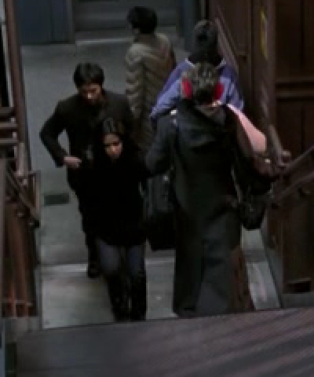

The Lady in Red

Last night marked Carol's triumphant return to television with her debut on ER! 38:27 into the episode, Carol makes her appearance as Neela and Gates are walking up the stairs to the L platform. She is walking down the stairs towards them, so we only see her back (distinguishable by her red earmuffs). In case you missed it, here is a close-up.

Screen time is only 8 seconds, but on network TV, that's an eternity! You can view the whole scene below.
** There is another scene which we thought would be in this episode, with Carol's Blazer. That scene is in the Kovac/Ames storyline, so it must be in an upcoming episode. Stay tuned!
Originally published on the Blogspot site